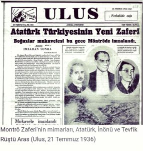

Montrö Boğazlar Sözleşmesi
Montrö Boğazlar Sözleşmesi, 20 Temmuz 1936 tarihinde İsviçre’nin Montrö kentinde imzalanan ve Türkiye’nin Boğazlar üzerindeki kontrolünü yeniden kazandığı, Boğazlar rejimini düzenleyen uluslararası bir antlaşmadır. Bu sözleşme, Karadeniz’e kıyısı olan ve olmayan devletlerin Boğazlardan geçişini belirli kurallara bağlayarak, hem Türkiye’nin hem de bölge ülkelerinin güvenliğini sağlamayı amaçlamıştır. 
{kind=link}
Osmanlı İmparatorluğu’nun çöküş sürecinde, Boğazların stratejik önemi daha da artmıştı. I. Dünya Savaşı sonrasında imzalanan Sevr Antlaşması (1920), Boğazların uluslararası bir komisyon tarafından yönetilmesini öngörmüştü. Ancak, bu antlaşma hiçbir zaman yürürlüğe girmedi. Lozan Antlaşması (1923) ile Boğazlar, Türkiye’nin egemenliğinde kalmış, ancak Boğazlar Komisyonu’nun denetiminde serbest geçiş hakkı tanınmıştı. Bu durum, Türkiye’nin Boğazlar üzerindeki tam kontrolünü sınırlamaktaydı. 1930’ların başında, Avrupa’da artan siyasi ve askeri gerilimler, Türkiye’yi Boğazlar konusundaki durumunu gözden geçirmeye itti. Özellikle, İtalya’nın Doğu Akdeniz’deki yayılmacı politikaları ve Almanya’nın yeniden silahlanması, Türkiye’nin güvenlik endişelerini artırdı. Bu bağlamda, Türkiye, Lozan’da belirlenen Boğazlar rejimini değiştirmek ve kendi egemenliğini pekiştirmek amacıyla harekete geçti.
1936 yılında, Türkiye’nin girişimiyle Montrö’de bir konferans düzenlendi. Konferansa Türkiye, Birleşik Krallık, Fransa, Sovyetler Birliği, Yunanistan, Japonya, Romanya ve Yugoslavya katıldı. Görüşmeler sonucunda, 20 Temmuz 1936’da Montrö Boğazlar Sözleşmesi imzalandı. Bu sözleşme, Boğazlar üzerindeki askeri ve ticari gemilerin geçiş rejimini yeniden düzenledi ve Türkiye’nin Boğazlar üzerindeki kontrolünü artırdı.
Montrö Boğazlar Sözleşmesi, Boğazlardan geçişi barış ve savaş zamanlarında farklı kurallara bağlamıştır. Barış zamanında, ticari gemilere serbest geçiş hakkı tanınmış, savaş gemilerinin geçişi ise belirli kısıtlamalara tabi tutulmuştur. Karadeniz’e kıyısı olmayan devletlerin savaş gemileri, belirli tonaj sınırları ve süre kısıtlamaları dahilinde Boğazlardan geçiş yapabilirken, Karadeniz’e kıyısı olan devletler daha geniş haklara sahip olmuştur. Savaş zamanında ise, Türkiye’nin tarafsız olduğu durumlarda ticari gemilere serbest geçiş hakkı tanınırken, savaş gemilerinin geçişi Türkiye’nin takdirine bırakılmıştır. Türkiye’nin savaş halinde olduğu durumlarda ise, Türkiye Boğazları tamamen kapatma hakkına sahiptir.
Montrö Boğazlar Sözleşmesi, Türkiye’nin egemenlik haklarını pekiştirmiş ve Boğazlar üzerindeki tam kontrolünü yeniden sağlamıştır. Bu durum, Türkiye’nin güvenliğini artırmış ve bölgesel istikrarı koruma açısından önemli bir rol oynamıştır. Sözleşme, aynı zamanda Karadeniz’e kıyısı olan devletlerin güvenliğini de gözetmiş ve bu devletlerin Boğazlardan geçişini belirli kurallara bağlayarak, Karadeniz’in bir barış ve işbirliği denizi olmasını sağlamıştır. Montrö Boğazlar Sözleşmesi, günümüzde de geçerliliğini koruyan ve bölge ülkeleri için büyük öneme sahip olan bir düzenlemedir. Türkiye’nin stratejik konumu ve Boğazlar üzerindeki kontrolü, hem bölgesel hem de küresel politikada önemli bir faktör olarak varlığını sürdürmektedir. Bu sözleşme, uluslararası hukuk ve diplomasi açısından da önemli bir örnek teşkil etmekte, devletlerin egemenlik haklarını ve güvenlik çıkarlarını dengeleyen bir düzenleme olarak öne çıkmaktadır.
Montrö Boğazlar Sözleşmesi, Türkiye’nin tarihsel ve stratejik konumunu güçlendiren, bölgesel güvenliği sağlayan ve uluslararası hukukta önemli bir yere sahip olan bir antlaşmadır. Bu sözleşme, Türkiye’nin Boğazlar üzerindeki kontrolünü ve egemenliğini yeniden tesis etmiş ve bölge ülkeleri arasındaki ilişkilerin düzenlenmesinde kilit bir rol oynamıştır.